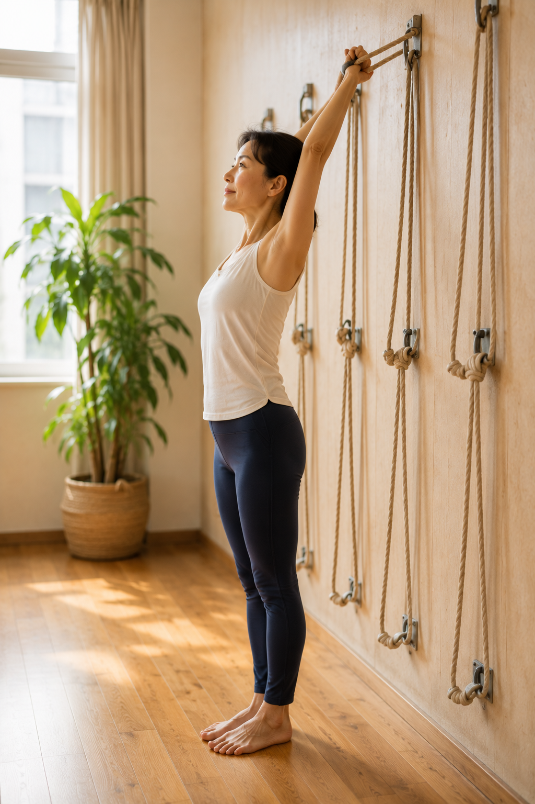

第一次上壁繩瑜伽會做什麼？新手上課前先看這些

- 走進壁繩教室前先放下焦慮：你不需要具備高柔軟度，壁繩正是專為身體僵硬、缺乏支撐感的人所設計的練習系統。
- 實體教室採用建築級化學錨栓植入鋼筋混凝土結構牆，單點抗拉數百公斤以上，繩索破斷拉力破千公斤，安全無虞。
- 課堂標準五大流程：動態評估確認病史、站姿骨骼對位、胸腔開展與脊柱減壓牽引、下肢穩定發力、繩索深層大休息。
- 初學者絕不強迫倒立！倒懸屬於進階自選減壓動作，新手班完全以站姿、坐姿與溫和水平伸展為主。
- 若有嚴重未受控高血壓、青光眼視網膜病變、急性神經根壓迫或馬尾症候群等紅旗症狀，嚴禁直接運動，應先就醫。
很多人初次看見壁繩瑜伽的照片時，心中往往同時升起兩種極端感受：一方面渴望像學員那樣把整個背部完全拉開、享受脊椎被減壓的舒暢；另一方面卻又被掛在牆上的繩索嚇退——「那面牆到底穩不穩？繩子會不會斷？我筋骨這麼硬會不會被老師硬扳？第一次走進教室到底會發生什麼事？」如果你心中也有這些疑慮，這篇文章將為你鉅細靡遺地拆解課堂現場的真實全貌。
破除未知恐懼：壁繩瑜伽的結構安全工程學
新手最深層的本能抗拒，往往來自對「墜落與器械斷裂」的恐懼。在人體神經生理學中，一旦大腦懷疑支撐結構的安全性，前庭系統與交感神經會立即拉響警報，肌肉會本能地死死收縮以防摔傷。因此，建立對環境工程的理性信任，是放鬆的第一步：
- 建築級結構牆植筋錨固：正規壁繩教室的五金基座，絕不可能安裝在一般的石膏板或木作輕隔間上。鑫彥瑜珈的壁掛鋼構固定點，是使用重型化學錨栓（Chemical Anchor）深層鑽孔植入實心鋼筋混凝土結構牆（RC 牆）。單個金屬錨點的抗拔力與剪切強度經過專業工程測試，靜態抗拉力均達 500 至 1000 公斤以上。
- 高強度工業級繩帶與車縫：懸掛在牆上的不是一般繩子，而是通過國際攀登認證（UIAA / CE）的登山動力繩與多重密集車縫的專業尼龍扁帶，其單條破斷強度超過 2000 公斤。即使是體重較重的成年人，將全身自重完全交付給繩帶，安全係數依然在數倍以上。
第一次上課完整動態拆解：循序漸進的五大標準階段
在鑫彥瑜珈的課堂上，我們絕不會讓初學者一進門就盲目模仿高難度姿勢。專業的壁繩課程是一套嚴謹的動作教育程序：
階段一：課前對話與動態病史確認（5～10 分鐘）
老師在學員上墊前，會先面對面確認身體背景：平時是哪裡最容易痠痛？頸椎或腰椎有沒有照過核磁共振（MRI）確認過椎間盤狀況？手腕或膝蓋有沒有舊傷？血壓與心血管狀況是否平穩？這個步驟是為了為你建立當天練習的「安全保護範圍」。
階段二：基礎站姿與骨骼力線校準（10 分鐘）
學員先背對或面對牆面站立，雙手輕握中位繩帶。此時繩索的作用不是拉扯，而是充當「空間參考座標（Closed Kinetic Chain Reference）」。老師會引導你感受足底三點（大腳趾球、小腳趾球、腳跟中心）扎根，微調骨盆水平，讓習慣塌腰或駝背的大腦，第一次清楚感知到什麼是「不費力的脊柱中立位」。
階段三：胸腔開展與脊柱軸向牽引（15～20 分鐘）
這是絕大多數新手最驚艷的環節。利用壁繩進行「改良式半下犬式」或「懸掛式開胸」：繩帶穩穩環抱骨盆髂骨嵴，學員將身體重心向後坐，雙手輕搭繩圈。此時繩索接管了上半身 50% 以上的重量，原本擠壓在 L4–S1 腰椎與手腕的垂直重力瞬間轉化為溫和的水平牽引力，胸椎小面關節在零負擔的狀態下輕柔滑動開展，卡死多年的上背部第一次能暢快呼吸。

階段四：深層核心與下肢抗重力穩定（15 分鐘）
放鬆卡死部位後，必須立刻喚醒維持體態的穩定肌肉。借助繩索提供的平衡支持，學員進行低幅度的勇士式或弓箭步。因為有了繩子借力，大腦不再害怕跌倒，膝蓋與腳踝不會代償扭曲，能精準孤立活化沉睡已久的臀中肌與下腹深層核心，為體態建立長效支撐力。
階段五：繩索輔助深層大休息（Savasana）（10 分鐘）
課程尾聲，學員躺在瑜伽墊上，雙腿小腿肚置於低位繩帶或吊床中微幅懸高。這種抬腿體位能有效促進下肢靜脈血液與淋巴液向心臟回流，消除整天久坐久站的腿部腫脹，中樞神經系統由交感轉為副交感神經主導，在深長平緩的呼吸中達成深層細胞修復。

新手最關心的迷思：第一次上課一定要倒立倒懸嗎？
許多人在社群網路上看到學員「頭朝下懸空倒掛」的照片，往往感到心驚膽跳。我們在此給予最明確的澄清：初學者絕不強迫倒立！
在人體力學上，「骨盆自重倒懸（Inversion）」確實具有卓越的腰椎軸向減壓效果，但它屬於進階動作，必須滿足多項嚴格生理前提：頸部與上背部已具備基本排列認知、無心血管與腦血管隱疾、眼壓完全正常，且最重要的是——學員本人心理完全準備好並主動同意。對於第一堂課的新手，老師會百分之百以站姿、坐姿與溫和水平伸展為主，絕不勉強進行未經評估的倒立動作。
課前準備清單：穿什麼、帶什麼？
第一次踏入教室，你只需要準備最純粹的自己：
- 服裝建議：請穿著具備良好延展性、吸汗且合身的運動服或瑜伽服（長褲或七分褲為佳，避免過於寬鬆的飛鼠褲或垂墜長裙，以免在調整繩扣時產生摩擦或捲入繩圈）。
- 足部準備：課堂完全採取「赤腳練習」。赤腳能讓腳底豐富的本體感受器充分接觸地面，不需要穿襪子或自備運動鞋。
- 隨身物品：自備個人飲水壺與一條擦汗小毛巾。教室現場備有全套專業壁繩系統、環保瑜伽墊、高密度瑜伽磚與伸展帶，你無須自購任何沉重輔具。
- 飲食間隔：上課前 1 至 1.5 小時請避免進食過飽的大餐，可於課前 30 分鐘微量補充水分，以免在牽引或伸展過程中腹部產生脹氣不適。
臨床急症紅旗（Red Flags）：哪些情況上課前必須主動告知或暫緩？
安全永遠高於一切訓練。若你目前正處於以下任何醫學狀況，請務必於課前主動告知，或優先由專科醫師評估：
- 倒懸絕對禁忌症：未受控制之高血壓（收縮壓 > 160 mmHg）、心律不整、腦動脈瘤病史、青光眼、近期視網膜雷射手術或剝離病史、嚴重中耳炎。
- 神經根急症：單側肢體突發觸電般劇烈麻痛、手指或腳掌感覺遲鈍失去力量（頸椎或腰椎神經根急性嚴重壓迫）。
- 馬尾症候群（Cauda Equina Syndrome）：會陰部鞍區感覺麻木、排尿排便失控或劇烈困難，此為神經外科急症，必須 24 小時內緊急就醫手術減壓。
- 懷孕初期或特殊病史：孕婦需經由具備孕婦瑜伽專業認證之教練評估，嚴禁進行任何壓迫腹部或高風險懸掛動作。
踏入教室的第一步：先看懂自己的身體力線
與其在未知中胡思亂想，不如讓科學數據為你引路。鑫彥瑜珈提供專利 AI 2D 體態檢測首次體驗專案，透過多點關節幾何分析，結合專業老師 20 分鐘當面逐行解讀，幫你找出骨盆、胸椎與肩膀的真正失衡點，量身規劃最安心的起步節奏。
預約首次 NT$299 AI 體態檢測（原價 NT$699）本文為運動生物力學與體態調整衛教知識分享，非醫療診斷或治療處方。若有慢性疾病、骨科舊傷或神經壓迫病史，請先諮詢合格醫療專業人員。
常見問題
第一次上壁繩瑜伽課會做什麼？具體流程包含哪些步驟？
第一次課堂主要分為五個循序漸進的階段：第一階段是「課前動態評估與病史確認」，老師會先了解你的骨骼舊傷與日常緊繃點；第二階段為「站姿骨骼對位」，藉由手握繩帶感受脊椎中立與腳跟扎根；第三階段進行「胸腔開展與脊柱軸向牽引」，利用繩索減壓開展卡死的胸椎與肩膀；第四階段為「下肢肌力與骨盆穩定」，在零關節負擔下喚醒臀腿肌群；第五階段則是「繩索支撐深層大休息」，讓身心神經系統徹底放鬆修復。
懸掛在牆上的壁繩真的安全嗎？繩子會不會斷裂或鬆脫？
壁繩系統具備極高的工業安全等級。教室牆面的固定錨點是使用重型化學錨栓深層植入實心鋼筋混凝土結構牆（絕非輕隔間牆），單一金屬壁掛點均通過專業拉力測試，可承載數百公斤以上的動態拉力；專用繩帶則採用高規格登山動力繩與多重車縫扁帶，抗拉強度超過兩千公斤，結構極其堅固，學員能完全放心地將身體自重交付給繩帶。
第一次上課一定要做倒立或頭朝下的倒懸動作嗎？
絕對不需要。倒懸（Inversion）雖然是壁繩瑜伽極具特色的腰椎深層減壓技巧，但在鑫彥瑜珈，倒懸被定位為進階選修項目，絕非初學者必備流程；對於初次接觸的新手，老師會完全專注於站姿、坐姿與水平方向的自重牽引，唯有學員身體準備充分、無心血管與眼壓禁忌且本人意願高度配合時，才會在老師全程一對一貼身保護下嘗試。
第一次上壁繩瑜伽課需要準備什麼裝備或服裝？
服裝建議穿著合身、具延展性且包覆性良好的運動服或瑜伽服（避免過於寬鬆飄逸的衣物，以免在動作中捲入繩圈），不需要準備特殊防滑鞋，赤腳練習能最好地建立足底本體感覺；個人物品只需攜帶一條擦汗毛巾與個人水壺即可，教室備有所有專業輔具、瑜伽磚與高承重繩帶，無須自行購置任何器材。
如果身上有舊傷、退化或椎間盤突出，上課前該怎麼告知老師？
請在課前評估時詳實告知老師所有病史，包括頸椎或腰椎是否曾被診斷椎間盤突出、膝關節或髖關節有無退化置換、以及平時做哪些特定動作會引發刺痛或麻木；但在急性發炎劇痛期、單側肢體出現電擊般放射神經痛、或伴隨大小便功能異常（馬尾症候群急症紅旗）時，嚴禁直接上課，必須優先取得專科醫師診斷與運動許可。